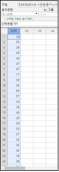
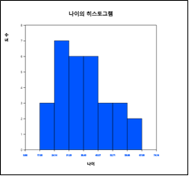
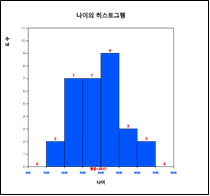
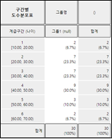
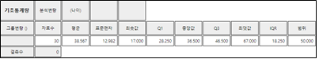
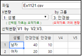
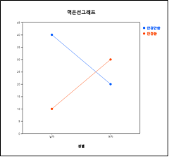

11장 범주형 데이터의 가설검정
11.2 교차표의 가설검정
독립성 검정
동질성 검정
[11장 pdf]
7장에서 10장까지 알아본 여러 가지 형태의 가설검정은 모두 연속형 자료에 대한 것이다. 이 장에서는 성별,
교육정도 등과 같은 범주형 데이터를 이용하여 모집단에 대한 가설검정 방법을 알아본다. 을 살펴보고, 11.2절에서는 교차표에 대한 독립성검정과 동질성검정을 살펴보고 두 이산형 변량에 대한 관련성의 측도에는 어떠한 것이 있는지 알아본다.
- 도수분포표에 대한 적합성검정 :
범주형 데이터인 경우와 연속형 데이터인 경우
- 교차표의 검정 :
독립성 검정과 동질성 검정
11.1 적합성 검정
4장에서 살펴본 도수분포표는 한 범주형 변량의 가능한 값에 대한 빈도수를 조사한 것이다. 만일 이 도수분포표가 한 모집단에서
추출된 표본자료에 대한 것이라면 모집단의 도수분포가 어떠한 것인지 궁금하게 된다. 적합성 검정
(goodness of fit test)이란 모집단이 특정한 분포를 따른다는 가설에 대해 표본의 도수분포를 이용하여 검정하는 것이다.
범주형 분포의 적합성 검정과 연속형 분포의 적합성 검정으로 나누어 살펴보자.
한 범주형 변량 X의 가능한 값이 k개가 있고 편의상 이 값들을 \(x_1 , x_2 , ... , x_k\), 각 값의 확률을
\(p_1 , p_2 , ... , p_k\)라 하자. 즉, 범주형 변량 X에 대한 확률분포가 다음과 같다.
| \(X\) |
\(P(X = x)\) |
| \(x_1\) | \(p_1\) |
| \(x_2\) | \(p_2\) |
| \(\cdots\) | \(\cdots\) |
| \(x_k\) | \(p_k\) |
| 합계 | 1 |
한 모집단에서 표본추출된 n개의 자료에 대한 관찰도수가 \(O_1 , O_2 , ... , O_k\)일 때 이 자료의 모집단 확률분포가
\(p_{10} , p_{20} , ... , p_{k0}\)라는 가설은 다음과 같다.
\(H_0 : (p_1 , p_2 , ... , p_k ) = (p_{10} , p_{20} , ... , p_{k0} )\)
\(H_1 :\) 적어도 하나의 \(p_i\)는 가정된 \(p_{i0}\)와 다르다.
또는 다음과 같이 적을 수도 있다.
\(H_0 :\) 표본분포가 이론분포 \((p_{10} , p_{20} , ... , p_{k0} )\)를 따름
\(H_1 :\) 표본분포가 이론분포 \((p_{10} , p_{20} , ... , p_{k0} )\)와 다름
이 가설은 n 이 충분히 크면 카이제곱 검정통계량을 이용하여 검정한다.
$$
\text{‘만일 } \chi_{obs}^{2} = \sum_{i=1}^{k} \frac { (O_{i} - E_{i} )^{2}} {E_{i}} > \chi_{k-m-1 ; α}^{2}, H_0 \text{기각}’
$$
여기서 기대도수 (\(E_1 , E_2 , ... , E_k \)) = (\(np_{10} , np_{20} , ... , np_{k0} \))이고
\(m\)은 표본자료에서 추정된 모집단 모수의 개수이다.
☞ 주의 : 적합성검정에서 카이제곱분포를 이용하려면 모든 기대도수 \(E_i\)가 적어도
5이상이어야 한다. 5보다 적은 범주는 인접범주와 합쳐서 분석하기도 한다.
🎲 예 11.1
한 지방선거에서 세 후보자의 지지도를 알아보기 위해 150명을 표본추출하여 조사한 결과가 다음과 같다.
| 후보자 |
지지자수 |
백분율 |
| 갑 | 60 | 40.0％ |
| 을 | 50 | 33.3％ |
| 병 | 40 | 25.7％ |
| 합계 | 150 | 100% |
이 표본자료만 본다면 ‘갑’ 후보가 40％ 지지율로 타 후보들보다 지지율이 높은 것 같다. 과연 이 표본자료의 결과를 가지고 후보의 지지율이 다르다고 볼 수 있는가? 유의수준 5％로 검정하라. 『eStatU』를 이용하여 적합성검정을 하라.
풀이
각 후보의 지지율을 \(p_1 , p_2 , p_3\) 라 할때 가설은 다음과 같다.
\(H_0\) : 세 후보의 지지율이 같다. (즉, \(H_0 : p_1 = p_2 = p_3 = \frac{1}{3}\) )
\(H_1\) : 세 후보의 지지율이 다르다.
만일에 ‘세 후보의 지지율이 같다’는 귀무가설 \(H_0\)가 맞다면 150명의 표본에 대해 각 후보가 기대할 수 있는
지지자 수는 각각 50명(\(150 \times \frac{1}{3}\))일 것이다. 이것을 기대도수(expected frequency)라 한다.
각 후보별로 표본에서 관찰된 지지자 수를 관찰도수(observed frequency)라 부르는데 \(H_0\)가 사실일 경우의
기대되는 지지자 수를 정리하면 아래와 같다.
| 후보자 |
관찰도수
(\(O_i\)로 표시) |
기대도수
(\(E_i\)로 표시) |
| 갑 | \(O_1 = 60\) | \(E_1 = 50\) |
| 을 | \(O_2 = 50\) | \(E_2 = 50\) |
| 병 | \(O_3 = 40\) | \(E_3 = 50\) |
| 합계 | 150 | 150 |
\(H_0\)가 사실이라면 관찰된 지지자 수(\(O_i\))와 기대되는 지지자 수(\(E_i\))는 일치할 것이다. 그래서
위의 가설을 검정하는 통계량은 \(O_i\)와 \(E_i\)의 차이값을 이용한다. 구체적으로 위의 가설에 대한 검정통계량은 다음과 같다.
\(
{\chi}_{obs}^2 = \frac {(O_1 - E_1 )^2} {E_1} + \frac {(O_2 - E_2 ) ^2} {E_2} + \frac {(O_3 - E_3 )^2} {E_3}
\)
이 검정통계량의 관찰된 값이 0에 가까우면 \(O_i\)와 \(E_i\)가 근접하게 되므로 \(H_0\)가 사실이라고 볼 수 있고,
값이 커지면 \(H_0\)를 기각하여야 될 것이다. ‘관찰된 값이 얼마나 커지면 통계적으로 유의하는지?’가 문제인데 기대도수가 충분히 클 경우 이 검정통계량은 근사적으로 카이제곱 분포를 따르게 된다. 따라서 가설의 선택기준은 다음과 같다.
‘만일 \(\chi_{obs}^2 > \chi_{k-1; α}^2\) , \(\small H_0\) 기각’
여기서 k는 도수분포의 범주의 개수이다. 위의 예에서
\( {\chi}_{obs}^2 = \frac {(60 - 50)^2} {50} + \frac {(50 - 50 ) ^2} {50} + \frac {(40 - 50)^2} {50}\)
\(\chi_{k-1 ; α}^{2} = \chi_{3-1 ; 0.05}^{2} = \chi_{2 ; 0.05}^{2} = 5.991 \)
따라서 \(H_0\)는 기각하지 못한다. 즉, 위의 표본자료는 세 후보의 지지율이 차이가 나지만 이 정도의 차이로는 세 후보의 지지율이 다르다고 결론지을 수 있는 충분한 근거가 되지 못한다는 것이다.
각 후보의 표본 지지율 \(\hat p_1 = \frac{60}{150}\) = 0.40, \(\hat p_2 = \frac{50}{150}\) = 0.33,
\(\hat p_1 = \frac{40}{150}\) = 0.27 을 이용하여 6장의 모비율 구간추정 이론으로 각 후보의 지지율에 대한
95％ 신뢰구간 (\({{\hat p}} ± 1.96 \sqrt { \hat p (1- \hat p ) / n } \))을 구하면 다음과 같다.
갑: \( \quad 0.40 \pm 1.96 \sqrt { \frac {0.40 \times 0.60} {150} } \quad \quad \Leftrightarrow \quad \) [0.322, 0.478]
을: \( \quad 0.33 \pm 1.96 \sqrt { \frac {0.33 \times 0.67} {150} } \quad \quad \Leftrightarrow \quad \) [0.255, 0.405]
병: \( \quad 0.27 \pm 1.96 \sqrt { \frac {0.27 \times 0.73} {150} } \quad \quad \Leftrightarrow \quad \) [0.190, 0.330]
세 후보의 지지율에 대해 추정된 구간이 서로 겹친다는 것은, 한 후보의 지지율이 다른 후보들보다 완전히 다르다고 볼 수는 없다는 것이다.
『eStatU』의 ‘적합성검정’ 메뉴를 선택하여 나타나는 입력박스에 [그림 11.1]과 같이 ‘관찰도수’와 ‘기대확률’ 데이터를 입력한다. 데이터 입력이 끝난 후 유의수준을 선택하고 ‘실행’ 버튼을 누르면 ‘기대도수’가 계산되고 카이제곱 검정 결과가 계산된다. 카이제곱분포를 이용한 검정은 기대도수가 적어도 5이상이 될 때 적용하여야 한다.
[]
[그림 11.2] 『eStatU』 카이제곱 적합성 검정
정규분포 적합성 검정
카이제곱분포를 이용한 범주형 자료에 대한 적합성검정은 연속형 자료에 대해서 이용하기도 한다. 자료가 정규분포 모집단에서 추출된 것인지 적합성검정을 하는 예를 살펴 보자. 6장에서 9장까지 자료에 대한 여러 가지 모수적 통계적 검정을 위해서는 모집단이 정규분포라는 가정이 필요한데, 이때 정규분포의 적합성검정이 이용된다.
🎲 예 11.2
어느 도서관을 오전에 방문한 30명의 나이를 조사하니 다음과 같다. 모집단이 정규분포라는 가설을 유의수준 5％로 검정하라.
28 55 26 35 43 47 47 17 35 26 65 57 34 28 43
20 30 53 27 32 34 43 18 38 29 44 67 48 45 43
풀이
나이는 연속형 변량이지만 구간을 나누어서 도수분포를 만들 수 있다. 이렇게 구간별 도수분포를 구하는 것을 범주형화라고 부른다. 나이를 10세부터 시작하여 구간을 10살 간격으로 도수분포를 구해 보자. 『eStat』의 히스토그램을 이용하면 이러한 도수분포를 쉽게 구할 수 있다. [그림 11.3]과 같이 데이터를 입력하고 히스토그램 아이콘을 누르면 나타나는 변량선택창에서 나이를 선택하면 [그림 11.4]와 같은 히스토그램이 나타난다.

[그림 11.3] 『eStat』데이터 입력

[그림 11.4] 나이의 기본 히스토그램
히스토그램 밑의 선택사항에서 ‘구간시작’을 10, ‘구간너비’를 10으로 지정한후 ‘새구간으로 실행’ 버튼을 누르면 [그림 11.5]와 같이 10세 간격으로 조정된 히스토그램이 나타나고 이때 ‘도수분포표’ 버튼을 누르면 결과저장창에 [그림 11.6]과 같은 구간별 도수분포가 나타난다. 구간 간격의 지정은 분석자가 결정하여야 한다.

[그림 11.5] 구간조정된 나이의 히스토그램

[그림 11.6] 구간조정된 나이의 도수분포표
정규분포는 \(-∞ < x < ∞\)에 정의된 연속형 분포여서 구간에 대한 도수분포를 다음과 같이 정리하였다.
표 11.1 구간조정된 나이의 도수분포표
| 구간번호 |
구간 |
관찰도수 |
| 1 | \( X < 20 \) | 2 |
| 2 | \(20 \le X < 30\) | 7 |
| 3 | \(30 \le X < 40\) | 7 |
| 4 | \(40 \le X < 50\) | 9 |
| 5 | \(50 \le X < 60\) | 3 |
| 6 | \( X \ge 60 \) | 3 |
이러한 구간별 도수분포에 대해 카이제곱분포를 이용한 적합성검정을 할 수 있다. 이 문제에 대한 가설은 다음과 같다.
\(H_0\) : 표본자료가 정규분포를 따름
\(H_0\) : 표본자료가 정규분포를 따르지 않음
이와 같은 가설은 구체적으로 어떠한 정규분포인지 명시하지 않았기 때문에 모평균 \(\mu\)와 모분산 \(\sigma^2\)은 표본에서 예측하여야 한다. 현재 『eStat』의 히스토그램 화면에서 주메뉴의 ‘기초통계량’ 아이콘을 누르면 [그림 11.7]과 같은 기초통계량표가 결과저장창에 나타난다. 표본평균은 38.567, 표본표준편차는 12.982이다.

[그림 11.7] 나이의 기초통계량
따라서 위의 가설은 다음과 같이 구체화하여 적을 수 있다.
\(H_0\) : 표본자료가 정규분포 \(N(38.567,\; 12.982 ^{2} )\)를 따름
\(H_1\) : 표본자료가 정규분포 \(N(38.567,\; 12.982 ^{2} )\)를 따르지 않음
\(H_0\)가 사실이라는 가정 하에서 각 구간의 기대도수를 구하기 위해서는 먼저 각 구간의 기대확률을 정규분포
\(N(38.567,\; 12.982 ^{2} )\)을 이용하여 다음과 같이 구한다. 『eStatU』의 정규분포를 이용하면 쉽게 구간의 확률을 구할 수 있다. 『eStatU』의 정규분포 화면에서 평균을 38.567, 표준편차를 12.982로 입력하고 첫 구간을 0(임의의 작은 값)과 20을 입력하고 ‘실행’ 버튼을 누르면 [그림 11.8]과 같이 확률을 계산하여 준다.
\(P(X \lt 20) = P(Z \lt \frac {20-38.567} {12.982} ) = P(Z \lt -1.430)=0.075\)
같은 방법으로 다음 구간의 확률을 계산한다.
\(P(20 \le X \lt 30) = P(\frac{20-38.567}{12.982} \le Z \lt \frac {30-38.567}{12.982} ) = P(-1.430 \le Z \lt -0.660) = 0.178\)
\(P(30 \le X \lt 40) = P(\frac{30-38.567}{12.982} \le Z \lt \frac {40-38.567}{12.982} ) = P(-0.660 \le Z \lt 0.110) = 0.289\)
\(P(40 \le X \lt 50) = P(\frac{40-38.567}{12.982} \le Z \lt \frac {50-38.567}{12.982} ) = P( 0.110 \le Z \lt 0.881) = 0.267\)
\(P(50 \le X \lt 60) = P(\frac{50-38.567}{12.982} \le Z \lt \frac {60-38.567}{12.982} ) = P( 0.881 \le Z \lt 1.651) = 0.140\)
\(P( X \ge 60) = P( Z \ge \frac {60-38.567}{12.982} ) = P( Z \ge 1.651) = 0.049\)
기대도수는 위에서 구한 각 구간의 확률에 표본의 크기 40을 곱하면 된다. 각 구간별 관찰도수, 확률, 기대도수를 표로 정리하면 다음과 같다.
표 11.2 \(N(38.567,\; 12.982 ^{2} )\)에서 각 구간별 기대확률과 기대도수
| 구간번호 |
구간 |
관찰도수 |
기대확률 |
기대도수 |
| 1 | \( X < 20 \) | 2 | 0.075 | 2.25 |
| 2 | \(20 \le X < 30\) | 7 | 0.178 | 5.34 |
| 3 | \(30 \le X < 40\) | 7 | 0.289 | 8.67 |
| 4 | \(40 \le X < 50\) | 9 | 0.267 | 8.01 |
| 5 | \(50 \le X < 60\) | 3 | 0.140 | 4.20 |
| 6 | \( X \ge 60 \) | 2 | 0.049 | 1.47 |
여기서 구간번호 1과 구간번호 6의 기대도수가 5보다 작기 때문에 카이제곱분포를 이용한 적합성검정을 위해서는 인접 구간과 합친다. 표에서 기대확률의 합이 1이 아니고 기대도수의 합계가 30이 아닌 것은 계산 오차이다.
| Interval id |
Interval |
Observed frequency |
Expected probability |
Expected frequency |
| 1 | \( X < 30 \) | 9 | 0.253 | 7.59 |
| 2 | \(30 \le X < 40\) | 7 | 0.289 | 8.67 |
| 3 | \(40 \le X < 50\) | 9 | 0.267 | 8.01 |
| 4 | \( X \ge 50 \) | 5 | 0.189 | 5.67 |
| | Total | 30 | 0.998 | 29.94 |
이렇게 합쳐진 구간에 대한 카이제곱 검정통계량은 다음과 같다.
\(\chi_{obs}^{2} = \frac{(9-7.59)^{2}}{7.59} + \frac{(7-8.67)^{2}}{8.67} + \frac{(9-8.01)^{2}}{8.01} + \frac{(5-5.67)^{2}}{5.67} = 0.785\)
구간이 4개가 되었으므로 k=4 이고, 두개의 모수 \(\mu ,\; \sigma^2\)는 추정하였으므로 m=2 이다.
\(\chi_{k-m-1; α}^{2} = \chi_{4-2-1; 0.05}^{2} = \chi_{1; 0.05}^{2} = 3.841\)
관찰된 검정통계량값이 기준값보다 작으므로 ‘자료가 정규분포 모집단에서 추출되었다’라는 귀무가설은 채택된다.
『eStatU』의 ‘적합성검정’을 이용하여 검정결과를 확인할 수 있다. ‘적합성검정’ 메뉴를 선택하여 나타나는 입력박스에 [그림 11.9]와 같이 표 11.3의 ‘관찰도수’와 ‘기대확률’ 데이터를 입력한다. 유의수준을 선택하고 [실행] 버튼을 누르면 ‘기대도수’가 계산되고 카이제곱 검정 결과가 나타난다([그림 11.10])
[]
[그림 11.10] 카이제곱 적합성검정 결과
11.2 교차표의 가설검정
독립성 검정
교차표의 독립성검정(test of independence)은 한 모집단에서 표본을 추출하였을 때 두 범주형 변량에 대한 독립성 여부를 조사하는 것이다.
한 모집단에서 변량 A의 속성이 r개이고, 변량 B의 속성이 c개인 r × c 교차표에서 각 속성이 나올 확률이
\(p_{ij}\)라 하자. 이를 표로 표시하면 표 11.4와 같다. 여기서 \(p_{i \cdot} , \; i=1,2, ... , r\)은
\(A_i\) 속성이 나올 확률 즉, \(p_{i\cdot} = p_{i1} + p_{i2} + \cdots + p_{ic}\)이고,
\(p_{\cdot j} , \; j=1,2, ... , c\)는 \(B_j\)속성이 나올 확률 즉,
\(p_{\cdot j} = p_{1j} + p_{2j} + \cdots + p_{rj}\)을 뜻한다.
표 11.4 두 범주형 변량의 \(r \times c \) 교차표 확률 기호
| 변량 A | 변량 B |
\(B_1\) |
\(B_2\) |
\(\cdots\) |
\(B_c\) |
합계 |
| \(A_1\) |
\(p_{11}\) |
\(p_{12}\) |
\(\cdots\) |
\(p_{1c}\) |
\(p_{1\cdot}\) |
| \(A_2\) |
\(p_{21}\) |
\(p_{22}\) |
\(\cdots\) |
\(p_{2c}\) |
\(p_{2\cdot}\) |
| \(\cdots\) |
\(\cdots\) |
\(\cdots\) |
\(\cdots\) |
\(\cdots\) |
\(\cdots\) |
| \(A_r\) |
\(p_{r1}\) |
\(p_{r2}\) |
\(\cdots\) |
\(p_{rc}\) |
\(p_{r\cdot}\) |
| 합계 |
\(p_{\cdot 1}\) |
\(p_{\cdot 2}\) |
\(\cdots\) |
\(p_{\cdot c}\) |
1 |
속성 A와 B가 독립이라는 것은 \(P(A_{i} \cap B_{j} ) = P(A_{i})·P(B_{j} ) \) 이므로
\(p_{ij} = p_{i \cdot} p_{\cdot j} \)를 만족하여야 한다. 변량 A와 변량 B가 서로 독립이라면
위의 성질이 모든 \(A_i\)와 \(B_j\)에 대하여 성립하는데, 이것을 검정하는 방법을 독립성검정
(independent test)이라 한다. 즉,
\(H_0 :\) 변량 \(A\)와 변량 \(B\)는 독립이다.
\(H_1 :\) 변량 \(A\)와 변량 \(B\)는 서로 독립이 아니다.
모집단의 두 변량이 독립인지를 검정하기 위해 n개의 표본이 추출되어 관찰된 교차표의 관찰도수
\(O_{ij}\)가 다음과 같다고 하자.
표 11.5 관찰도수 \(O_{ij}\) 기호
| 변량 A | 변량 B |
\(B_1\) |
\(B_2\) |
\(\cdots\) |
\(B_c\) |
합계 |
| \(A_1\) |
\(O_{11}\) |
\(O_{12}\) |
\(\cdots\) |
\(O_{1c}\) |
\(T_{1\cdot}\) |
| \(A_2\) |
\(O_{21}\) |
\(O_{22}\) |
\(\cdots\) |
\(O_{2c}\) |
\(T_{2\cdot}\) |
| \(\cdots\) |
\(\cdots\) |
\(\cdots\) |
\(\cdots\) |
\(\cdots\) |
\(\cdots\) |
| \(A_r\) |
\(O_{r1}\) |
\(O_{r2}\) |
\(\cdots\) |
\(O_{rc}\) |
\(T_{r\cdot}\) |
| 합계 |
\(T_{\cdot 1}\) |
\(T_{\cdot 2}\) |
\(\cdots\) |
\(T_{\cdot c}\) |
n |
만일 \(H_0\)가 사실일 경우, 즉, 두 변량이 서로 독립일 경우 표본자료의 기대도수는
\(n p_{i \cdot} p_{\cdot j} \)가 될 것이다. 모집단의 \(p_{i \cdot}\)와
\(n p_{\cdot j} \)는 모르므로 대신 추정치로 \(\frac {T_{i \cdot}}{n} \)와
\(\frac {T_{\cdot j}}{n} \)를 이용하면 기대도수의 추정치 \(E_{ij}\)는 다음과 같다.
$$
E_{ij} = n( \frac {T_{i\cdot}} {n} )( \frac {T_{\cdot j}} {n} ) = T_{i\cdot} ( \frac {T_{\cdot j}} {n} )
$$
표 11.6 기대도수 \(E_{ij}\) 계산
| 변량 A \ 변량 B |
\(B_1\) |
\(B_2\) |
\(\cdots\) |
\(B_c\) |
| \(A_1\) |
\(E_{11} = T_{1\cdot} \times \frac {T_{\cdot 1}}{n}\) |
\(E_{12} = T_{1\cdot} \times \frac {T_{\cdot 2}}{n}\) |
\(\cdots\) |
\(E_{1c} = T_{1\cdot} \times \frac {T_{\cdot c}}{n}\) |
| \(A_2\) |
\(E_{21} = T_{2\cdot} \times \frac {T_{\cdot 1}}{n}\) |
\(E_{22} = T_{2\cdot} \times \frac {T_{\cdot 2}}{n}\) |
\(\cdots\) |
\(E_{2c} = T_{2\cdot} \times \frac {T_{\cdot c}}{n}\) |
| \(\cdots\) |
\(\cdots\) |
\(\cdots\) |
\(\cdots\) |
\(\cdots\) |
| \(A_r\) |
\(E_{r1} = T_{r\cdot} \times \frac {T_{\cdot 1}}{n}\) |
\(E_{r2} = T_{r\cdot} \times \frac {T_{\cdot 2}}{n}\) |
\(\cdots\) |
\(E_{rc} = T_{r\cdot} \times \frac {T_{\cdot c}}{n}\) |
독립인 경우의 기대도수를 말로 설명하면, 변량 B의 각 속성들에 대한 표본확률
\(( T_{.1} / n , T_{.2} / n ,\cdots , T_{.r} / n ) \)이 변량의 각각의 속성에서도 유지되도록 기대되는
도수를 구한 것이다. 두 변량이 독립이라는 가설을 검정하는 통계량은 \(O_{ij}\)와 \(E_{ij}\)의 차이에 근거한
$$
\sum_{i=1}^{r} \sum_{j=1}^{c} \frac {(O_{ij} - E_{ij} )^2} {E_{ij}}
$$
인데 근사적으로 자유도가 \((r-1)(c-1)\)인 카이제곱분포를 따른다. 따라서 가설의 선택기준은 유의수준이 α일 때
다음과 같다.
$$
\text{‘만일}\quad \chi_{obs}^2 = \sum_{i=1}^{r} \sum_{j=1}^{c} \frac {(O_{ij} - E_{ij} )^2} {E_{ij}} \gt \chi_{(r-1)(c-1); α}^2,\; H_0 \text{기각}’
$$
🎲 예 11.3
대학생들의 안경 착용 여부를 남녀별로 조사하기 위해 100명을 표본추출하여 교차표를 작성하였더니 다음과 같다.
표 11.7 성별과 안경착용여부의 교차표
|
안경안씀 |
안경씀 |
합계 |
| 남자 |
40 |
10 |
50 |
| 여자 |
20 |
30 |
50 |
| 합계 |
60 |
40 |
100 |
[Ex] ⇨ eBook ⇨ EX110201_GlassesByGender.csv.
1) 『eStat』을 이용하여 남녀별 안경착용여부의 꺾은선그래프를 그려보라.
2) 성별 변량과 안경 착용여부 변량이 서로 독립인지 아니면 관련이 있는지 유의수준 5％로 가설검정을 하라.
3) 『eStatU』를 이용하여 독립성검정 결과를 확인하라.
풀이
1) 『eStat』에서 [그림 11.11]과 같이 데이터를 입력하고 ‘꺾은선그래프’를 선택한 후 성별, 안경안씀, 안경씀 변량을 차례로 누르면 [그림 11.12]와 같은 꺾은선그래프가 나타난다. 꺾은선그래프를 살펴보면 남녀별로 안경착용 여부가 많이 다름이 관찰된다. 남자인 경우 안경을 쓰지 않은 학생이 많고(남자 중에 80％), 여자인 경우 안경을 쓴 학생이 많다(여자 중에 60％). 이러한 경우 성별 변량과 안경 착용여부 변량은 관련이 있다고 생각된다. 이와 같이 두 변량이 서로 관련이 있을 때는 꺾은선그래프가 교차해서 나타나게 된다.

[그림 11.11] 『eStat』 데이터 입력

[그림 11.12] 성별과 안경 착용여부에 대한 꺾은선그래프
2) 만일 두 변량이 관련이 없다면(즉, 두 변량이 서로 독립이라면) 표 11.7의 교차표는 남자나 여자나 안경을 착용한 비율이 전체 학생의 안경을 착용한 비율 60％와 같아야 될 것이다. 즉, 독립인 경우에 기대되는 교차표는 다음과 같다.
표 11.8 성별과 안경착용여부가 독립일 경우의 교차표
|
안경안씀 |
안경씀 |
합계 |
| 남자 |
30 |
20 |
50 |
| 여자 |
30 |
20 |
50 |
| 합계 |
60 |
40 |
100 |
관찰된 교차표가 독립인 경우에 기대되는 교차표와 비교하여 별 차이가 없으면 두 범주형 변량은 서로 독립이라고 말하고, 차이가 매우 크면 두 변량이 서로 관련이 있다고 말한다. 독립성검정이란 표본에서 얻어지는 교차표(관찰도수)를 이용하여 모집단의 두 범주형 변량이 서로 독립이라고 판정을 내리는 통계적 방법으로 카이제곱 분포를 이용한다. 가설은 다음과 같다.
\(\small H_0 :\) 교차표의 두 변량이 서로 독립이다.
\(\small H_1 :\) 교차표의 두 변량이 서로 관련이 있다.
이 가설을 검정하기 위해서 사용되는 검정통계량은 적합성검정과 유사하게 표본에서 관찰된 교차표의 도수와, 독립이라고 가정되었을 때의 교차표의 도수(기대도수)와의 차이를 이용한다. 이 예에서의 검정통계량은 다음과 같다.
\(\chi_{obs}^{2~} = \frac{(40-30)^{2}}{30} + \frac{(10-20)^{2}}{20} + \frac{(20-30)^{2}}{30} + \frac{(30-20)^{2}}{20} \) = 16.67
이 통계량은 자유도가 (r-1)(c-1)인 카이제곱분포에 근사한다. 여기서 r은 행변량 값의 수, c는 열변량 값의 수이다. 따라서 선택기준은 다음과 같다.
'만일 \(\chi_{obs}^{2} > \chi_{(r-1)(c-1); α}^{2}\), \(\small H_0\) 기각.'
이 예에서는 \(\chi_{obs}^{2}\) = 16.67이고, \(\chi_{(r-1)(c-1); α}^{2} = \chi_{(2-1)(2-1); 0.05}^{2} = \chi_{1; 0.05}^{2}\) = 3.841 보다 크므로 두 변량이 서로 독립이라는 귀무가설은 기각된다. 즉, 성별과 안경착용은 관련이 있다고 볼 수 있다.
3) 『eStatU』의 독립성검정에서 [그림 11.13]과 같이 데이터를 입력하고 ‘실행’ 버튼을 누르면 [그림 11.14]와 같은 카이제곱 검정 결과가 나타난다.
[]
[그림 11.14] 『eStatU』의 카이제곱 독립성검정 결과
동질성 검정
독립성검정은 한 모집단에서 추출된 표본자료의 두 범주형 변량에 대한 교차표에 대한 것이었다. 하지만 같은 교차표라도 여러 개의 모집단에서 표본을 추출한 것일 수도 있다 이렇게 서로 다른 모집단에서 각각 표본을 추출하는 경우는 연구의 효율을 높이거나 시간적, 공간적 제약을 받을 때 많이 나타난다. 예를 들어, 어느 대학교의 1, 2, 3, 4학년의 영어 성적을 비교하고자 할 때는 각 학년을 별개의 모집단으로 하여 각각 표본을 추출하여 비교 분석하는 것이 타당하다. 어느 경우나 교차표는 다음과 같다.
표 11.9 학년별 영어성적 교차표
| 영어성적 \ 학년 |
1학년 |
2학년 |
3학년 |
4학년 |
| A |
- |
- |
- |
- |
| B |
- |
- |
- |
- |
| C |
- |
- |
- |
- |
| D |
- |
- |
- |
- |
만일 이 교차표가 각 학년별 모집단에서 추출된 것이라면, 우리가 궁금한 사실은 ‘학년과 영어성적이 독립’이라는 문제가 아니라 ‘각 학년의 성적분포가 같다’라는 것이다. 일반적으로 여러 개의 모집단에서 추출된 표본의 교차표에 대한 가설은
\(H_0\): 여러 개의 모집단의 한 범주형 변량에 대한 분포는 동일하다.
\(H_1\): 여러 개의 모집단의 한 범주형 변량에 대한 분포는 동일하지 않다.
이고, 이 가설의 검정을 동질성검정(test of homogeneity)이라 한다. 이 가설을 검정하기 위한 통계량은 독립성검정과 같은
$$
\chi_{obs}^2 = \sum_{i=1}^{r} \sum_{j=1}^{c} \frac {(O_{ij} - E_{ij} )^2} {E_{ij}}
$$
를 사용한다. 여기서 r은 범주형 변량의 속성개수이고, c는 모집단의 개수가 된다.
☞ 주의 : - 동질성검정에서 카이제곱분포를 이용하려면 모든 기대도수가 적어도 5이상이 되어야 한다.
- 만일 기대도수가 5보다 작으면 인접구간을 합쳐서 분석한다.
🎲 예 11.4
한 TV방송국에서 방영하는 세 프로그램 (A, B, C)에 대하여 시청자가 연령층별로 다른지 조사하기 위해 청년(10대와 20대), 중년(30대와 40대), 장년(50대 이상)층의 모집단에서 각각 표본을 200명, 100명, 100명씩 추출한 결과가 다음과 같다. 연령층별로 TV프로그램 선호가 다른지 유의수준 5％로 검정하라.
표 11.10 각 연령층별 선호 TV 프로그램 교차표
| TV 프로그램 \ 연령층 |
청년 |
중년 |
장년 |
합계 |
| A |
120 |
10 |
10 |
140 |
| B |
30 |
75 |
30 |
135 |
| C |
50 |
15 |
60 |
125 |
| 합계 |
200 |
100 |
100 |
400 |
풀이
이 문제의 가설은 다음과 같다.
\(\quad \small H_0\): 세 연령층별 TV프로그램 선호도는 동일하다.
\(\quad \small H_1\): 세 연령층별 TV프로그램 선호도는 다르다.
각 연령층별로 표본의 수에 대한 비율은 다음과 같다.
\(\quad ( \frac{200}{400}, \frac{100}{400}, \frac{100}{400} )\)
그러므로 \(H_0\)가 사실일 경우 각 프로그램의 기대도수는 다음과 같다
\(\small \quad E_{11} = 140 \times \frac{200}{400} = 70.00, \quad E_{12} = 140 \times \frac{100}{400} = 35.00, \quad E_{13} = 140 \times \frac{100}{400} = 35.00\)
\(\small \quad E_{21} = 135 \times \frac{200}{400} = 67.50, \quad E_{22} = 135 \times \frac{100}{400} = 33.75, \quad E_{23} = 135 \times \frac{100}{400} = 33.75\)
\(\small \quad E_{31} = 125 \times \frac{200}{400} = 62.50, \quad E_{32} = 125 \times \frac{100}{400} = 31.25, \quad E_{33} = 125 \times \frac{100}{400} = 31.25\)
따라서 검정통계량과 기준값은 다음과 같다.
\(\qquad \chi_{obs}^2 = \sum_{i=1}^3 \sum_{j=1}^3 \; \frac{(O_{ij} - E_{ij} )^2 }{E_{ij}} = \frac{(120-70)^2}{70} + \frac{(10-35)^2}{35} + \cdots + \frac{(60-31.25)^2}{31.25} \) = 180.495
\(\qquad \chi_{(r-1)(c-1); α}^2 = \chi_{(3-1)(3-1); 0.05}^2 = \chi_{4; 0.05}^2 \) = 9.488
그러므로 \(H_0\)는 기각된다. 즉, 연령층별로 TV프로그램의 선호는 다르다.
[]